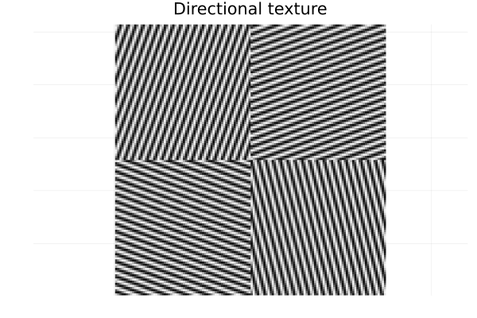
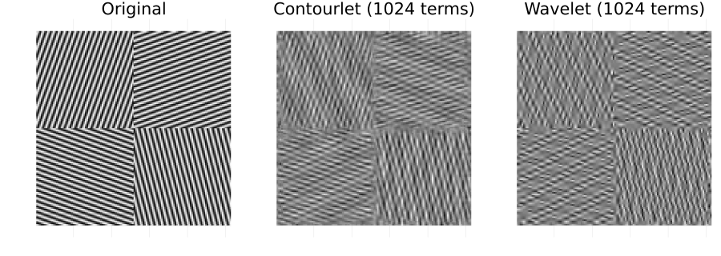

Nonlinear Approximation & Denoising
This page reproduces the two experiments that motivate the contourlet transform (Do & Vetterli 2005, §VI) and compares it against a separable 2-D "9/7" wavelet from Wavelets.jl:
- M-term nonlinear approximation (NLA) — keep only the
Mmost significant coefficients and reconstruct. Contourlets represent oriented texture with directional basis elements, which separable wavelets cannot. - Denoising — hard-threshold the coefficients of a noisy image. The shift-invariant NSCT removes noise from oriented features with less ringing.
Both transforms use the same CDF 9/7 filters, so the comparison isolates the directional contribution. The numbers below are computed live during the docs build (so they will track the implementation).
M-term approximation of directional texture
Separable wavelets struggle with oriented oscillations. We build an image of four texture patches, each at a different orientation — the structure contourlets are designed for.
using Contourlets, Wavelets, Random, Plots
N = 128
texture = zeros(Float64, N, N)
for i in 1:N, j in 1:N
θ = (i <= N ÷ 2 ? (j <= N ÷ 2 ? 20 : 75) : (j <= N ÷ 2 ? 110 : 160)) * π / 180
texture[i, j] = sin(2π * 0.3 * (cos(θ) * i + sin(θ) * j))
end
heatmap(texture, color = :grays, title = "Directional texture", aspect_ratio = :equal,
axis = false, colorbar = false)GKS: cannot open display - headless operation mode active
Keeping the same number of coefficients M for both transforms:
params = ContourletParams(J = 3, L_array = [3, 3, 2])
γ = ct_subband_gains(params, (N, N))
for M in (512, 1024, 2048)
ct = psnr(texture, ct_nla(texture, params, γ, M))
wv = psnr(texture, wt_nla(texture, M))
println("M = $(lpad(M, 4)): contourlet $(round(ct; digits = 2)) dB " *
"9/7 wavelet $(round(wv; digits = 2)) dB " *
"gain $(round(ct - wv; digits = 2)) dB")
endM = 512: contourlet 10.36 dB 9/7 wavelet 9.66 dB gain 0.69 dB
M = 1024: contourlet 12.07 dB 9/7 wavelet 10.89 dB gain 1.18 dB
M = 2048: contourlet 14.23 dB 9/7 wavelet 13.98 dB gain 0.25 dBThe contourlet keeps a higher PSNR at every budget: its directional subbands match the texture orientation, so fewer coefficients describe each patch.
M = 1024
ct_approx = ct_nla(texture, params, γ, M)
wt_approx = wt_nla(texture, M)
p = plot(layout = (1, 3), size = (900, 320))
heatmap!(p[1], texture, title = "Original", color = :grays, aspect_ratio = :equal, axis = false, colorbar = false)
heatmap!(p[2], ct_approx, title = "Contourlet ($M terms)", color = :grays, aspect_ratio = :equal, axis = false, colorbar = false)
heatmap!(p[3], wt_approx, title = "Wavelet ($M terms)", color = :grays, aspect_ratio = :equal, axis = false, colorbar = false)
Denoising with the shift-invariant NSCT
We corrupt a crop of the Barbara image (focusing on the fabric regions) with white Gaussian noise and evaluate three different thresholding strategies:
- Hard Thresholding: A universal threshold $\lambda = k\,\sigma\,\gamma_{j,k}$ is applied independently, where $\gamma_{j,k}$ is the estimated noise gain of the subband.
- Local Variance-Adaptive Thresholding: A spatially-adaptive soft threshold. We estimate the local signal variance $\sigma_w^2 = \max(0, \frac{1}{N} \sum y_i^2 - \sigma_n^2)$ in a small window. The threshold is dynamically set as $T = \sigma_n^2 / \sigma_w$.
- Bivariate Shrinkage: Proposed by Sendur & Selesnick, this models the dependency between a coefficient $y_1$ and its parent coefficient $y_2$ (at the same spatial location in the next coarser scale). The joint magnitude is $y = \sqrt{y_1^2 + y_2^2}$, and the shrinkage function is:
\[\hat{w}_1 = \frac{(y - \sqrt{3}\sigma_n^2 / \sigma_w)_{+}}{y} y_1\]
This heavily shrinks coefficients whose parents are small (likely noise), while preserving true edges that persist across multiple scales.
# Use a 512x512 crop of the Barbara image containing oriented textures
ref = Float64.(Gray.(testimage("barbara")))[1:512, 100:611]
shading = ref
Random.seed!(11)
σ = 0.08
noisy = shading .+ σ .* randn(size(shading)...)
gains = nsct_noise_gains(params, size(shading))
ct_rec = nsct_denoise(noisy, params, gains, σ, 3.0)
ct_local = nsct_local_variance_denoise(noisy, params, gains, σ)
ct_bivar = nsct_bivariate_denoise(noisy, params, gains, σ)
wt_rec = wt_denoise(noisy, 3σ)
println("noisy : $(round(psnr(shading, noisy); digits = 2)) dB")
println("9/7 wavelet hard : $(round(psnr(shading, wt_rec); digits = 2)) dB")
println("NSCT hard : $(round(psnr(shading, ct_rec); digits = 2)) dB")
println("NSCT local var : $(round(psnr(shading, ct_local); digits = 2)) dB")
println("NSCT bivariate : $(round(psnr(shading, ct_bivar); digits = 2)) dB")
println("Bivariate gain over wavelet: $(round(psnr(shading, ct_bivar) - psnr(shading, wt_rec); digits = 2)) dB")noisy : 20.95 dB
9/7 wavelet hard : 24.4 dB
NSCT hard : 22.64 dB
NSCT local var : 25.23 dB
NSCT bivariate : 25.6 dB
Bivariate gain over wavelet: 1.2 dBp2 = plot(layout = (2, 2), size = (800, 800))
heatmap!(p2[1], noisy, title = "Noisy", color = :grays, aspect_ratio = :equal, axis = false, colorbar = false, yflip = true)
heatmap!(p2[2], wt_rec, title = "Wavelet hard", color = :grays, aspect_ratio = :equal, axis = false, colorbar = false, yflip = true)
heatmap!(p2[3], ct_rec, title = "NSCT hard", color = :grays, aspect_ratio = :equal, axis = false, colorbar = false, yflip = true)
heatmap!(p2[4], ct_bivar, title = "NSCT bivariate", color = :grays, aspect_ratio = :equal, axis = false, colorbar = false, yflip = true)
These are small (128²) synthetic experiments meant to illustrate the directional benefit; the exact gains depend on the image, parameters and threshold. On smooth or piecewise-constant images the critically sampled wavelet is hard to beat — the contourlet advantage appears specifically for oriented texture and long smooth contours. Larger gains on natural images (the ≈1.46 dB reported by Do & Vetterli 2005) use statistically tuned thresholds (e.g. the hidden-Markov-tree model of Po & Do 2006) rather than the single universal threshold used here.